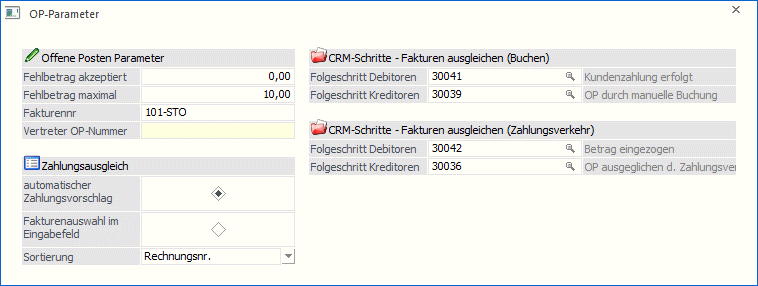

Die OP-Parameter werden einerseits für die Stapelbuchungsschnittstelle benötigt, da über die Stapelbuchungen auch Zahlungen eingelesen werden können. Andererseits können darin CRM-Folgeschritte hinterlegt werden.

Offene Posten Parameter
Ø Fehlbetrag akzeptiert
Im Feld Fehlbetrag akzeptiert wird der Betrag eingegeben, der als zusätzlicher Skontoabzug genehmigt wird - z.B. 10,--.
Ø Fehlbetrag maximal
Im Feld Fehlbetrag maximal wird der Betrag eingegeben, der als zusätzlicher (also über den berechtigen Skonto hinausgehender) Skonto gerade noch akzeptiert werden kann.
Mit welcher Logik wird festgestellt, ob ein Fehlbetrag ausgebucht wird oder nicht?
Ist der Fehlbetrag kleiner als der Wert Fehlbetrag akzeptiert, wird der Fehlbetrag immer ausgebucht.
Ist der Fehlbetrag größer als der Wert Fehlbetrag maximal, wird immer eine Teilzahlung erzeugt und die Faktura mit dem Restbetrag offen gelassen.
Liegt der Fehlbetrag zwischen dem Wert Fehlbetrag akzeptiert und Fehlbetrag maximal, wird aufgrund des Fakturenbetrages und des Toleranz %-Satzes der Wert errechnet, der maximal abgezogen werden darf. Ist der Fehlbetrag auch noch innerhalb des Toleranzprozentsatzes, wird er als zusätzlicher Skontobetrag genehmigt und die OP ausgebucht. Wird der Toleranzprozentsatz überschritten, wird nur eine Teilzahlung durchgeführt.
Ø Fakturennr.
Eingabe einer Ersatzfakturennummer, die dann verwendet wird, wenn die einzulesende Faktura bereits (bei DF- oder KF-Buchungen) oder nicht mehr vorhanden (bei DZ-Buchungen) ist.
Beispiel 1
Eine Fremddatei wird über die Stapelbuchung eingelesen. In dieser Datei ist eine Fakturennummer für einen Kunden doppelt vorhanden. Da bei der Übernahme erkannt wird, dass die Fakturennummer bereits vorhanden ist, wird die Ersatz-Fakturennummer verwendet.
Beispiel 2
In der Ausgabe der Differenzliste wird festgestellt, dass auf einem Konto eine Differenz zwischen OP-Saldo und FIBU-Saldo entstanden ist, weil z.B. versehentlich eine Buchung auf ein Personenkonto anstelle mit der Buchungsart "DF" mit "B" gemacht worden ist. Die Differenzliste kann diese Differenz automatisch bereinigen, indem die fehlende OP vom System erstellt wird. Als OP-Nummer wird auch die Ersatz-Fakturennummer herangezogen.
Ø Vertreter OP-Nummer
In diesem Feld kann ein Vertreter OP-Nummernkreis vorbelegt werden, der für die Übergabe der Buchungen der Vertreterabrechnung aus WinLine FAKT an die FIBU verwendet wird.
Achtung
Der numerische Teil der OP-Nummer darf nicht mit einer "Vorlaufnull" beginnen, sondern wie z.B. in der Abbildung dargestellt mit einer Ziffer größer 0.
Zahlungsausgleich
Ø Zahlungsausgleich
Hier kann definiert werden, nach welcher Methode der Zahlungsausgleich bei der Buchung von Zahlungen durchgeführt werden soll:
Ø automatischer Zahlungsvorschlag
Ist diese Option aktiviert, erfolgt der Zahlungsvorschlag in der Tabelle, in der alle offenen Fakturen angezeigt werden. Dabei schlägt das Programm automatisch vor (durch Setzen der entsprechenden Häkchen in den Checkboxen), welche Fakturen mit welchem Betrag ausgeglichen werden sollen. Dieser Vorschlag kann selbstverständlich immer noch manuell überarbeitet werden.
Zuerst sucht das Programm, ob es eine OP gibt, die exakt dem Zahlungsbetrag entspricht. Gibt es eine solche nicht, beginnt das Programm von oben weg (abhängig von der Sortierung - siehe unten) den Zahlungsbetrag auf die offenen Fakturen - natürlich unter Berücksichtigung der berechtigten Skontoabzüge - zuzuordnen, bis der Zahlungsbetrag komplett aufgeteilt ist.
Ø Fakturenauswahl im Eingabefeld
Mit dieser Option wird im Zahlungsverkehr der Focus auf die Spalte "Faktura" gesetzt. Wird dann die Fakturennummer eingegeben, sucht sich das Programm den entsprechenden Eintrag. Durch Bestätigen der Fakturenzeile mit der ENTER-Taste wird der offene Zahlungsbetrag automatisch der Faktura zugeordnet und die OP für die Zahlung markiert. Dann kann die nächste Fakturennummer eingegeben werden, usw.
Ø Sortierung
Hier kann entschieden werden, wie die Fakturen in der Zahlungstabelle sortiert werden sollen. Dabei stehen folgende Optionen zur Verfügung:
ü Nummer
Sortierung nach
Fakturennummer (Achtung: die Fakturennummer ist alphanumerisch, daher erfolgt
auch die Sortierung nach diesem Gesichtspunkt - also zuerst die erste Stelle,
dann die zweite Stelle, usw.)
ü Datum
Sortierung nach
Fakturendatum (hier würde die älteste OP zuerst gezahlt werden)
ü Betrag
Sortierung nach
Buchungsbetrag (hier würde die OP mit dem höchsten Betrag zuerst gezahlt
werden)
ü Leistungsdatum
Sortierung nach
Leistungsdatum (hier würde der OP mit dem ältesten Leistungsdatum, das bei einer
Abgrenzungsbuchung eingetragen wurde, zuerst gezahlt werden)
CRM-Schritte
In diesem Bereich können CRM-Folgeschritte hinterlegt werden, die beim Ausgleichen von Offenen Posten zum "zugehörigen" Workflow geschrieben werden sollen.
Hierbei wird grundsätzlich unterschieden zwischen Folgeschritte für Debitoren oder Kreditoren, bzw. zwischen den Buchungsvorgängen in den Buchungsfenstern (inkl. Fakturenausgleich) bzw. jenen im Zahlungsverkehr.
Beim Ausgleichen von Offenen Posten (OP wird auf "-1" oder "-2" gesetzt) wird geprüft, ob die Personenkontennummer und die auszugleichende OP-Nummer in einem Workflow, bzw. event. in verschiedenen Workflows enthalten ist. Ist dies der Fall, so wird der entsprechende Folgeschritt dazu geschrieben. Voraussetzung dafür ist, dass der zu schreibende Folgeschritt lt. Workflowdefinition als nächster Schritt möglich ist, und, dass der Benutzer auch die Berechtigung hat, den Schritt zu schreiben.
Ø CRM-Schritte - Fakturen ausgleichen (Buchen)
Hinterlegung des CRM-Folgeschrittes, der beim Ausgleichen von Offenen Posten, für Debitoren bzw. für Kreditoren in den Buchungsmenüpunkten (inkl. Fakturenausgleich) geschrieben werden soll.
Zur Suche nach Folgeschritten steht der Matchcode zur Verfügung.
Ø CRM-Schritte - Fakturen ausgleichen (Zahlungsverkehr)
Hinterlegung des CRM-Folgeschrittes, der beim Ausgleichen von Offenen Posten, für Debitoren bzw. für Kreditoren im Zahlungsverkehr geschrieben werden soll.
Zur Suche nach Folgeschritten steht der Matchcode zur Verfügung.